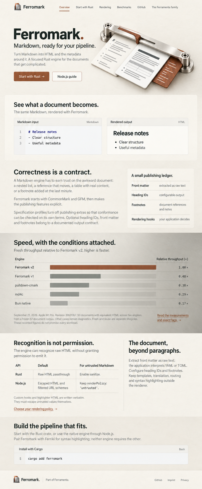

Design 35
Ferromark
Paper & pewter
Warm uncoated paper, satin pewter and oxide. Generous reading grounds and a broad evidence spread, with table typography designed for the material.

Material, color and evidence-table art direction on the Editorial folio composition. Compare the layout used here · Authoritative source copy · Exact prompt and provenance